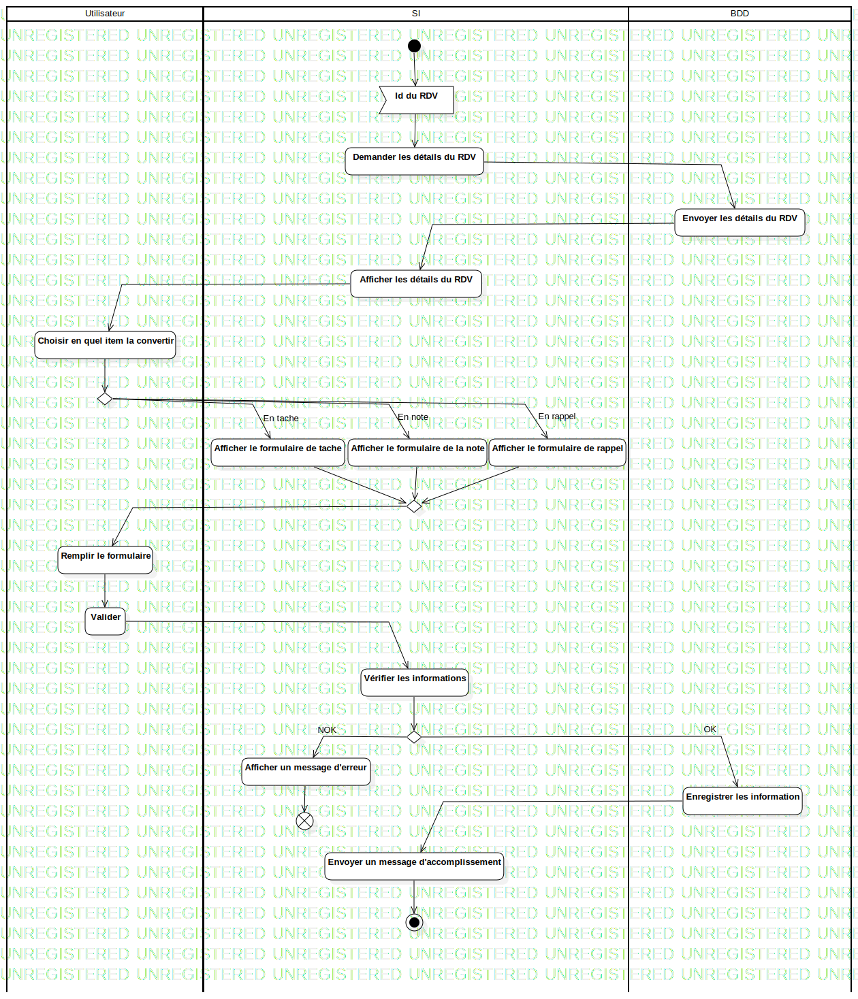

ActD Convertir une tache
UMLActivity
Untitled
::
Tache
::
ActD Convertir une tache
Description
none
Diagrams

ActD Convertir une tache
Groups
Utilisateur
SI
BDD
Nodes
FlowFinalNode1
Edges
(InitialNode1→Id du RDV)
(Id du RDV→Demander les détails du RDV)
(Demander les détails du RDV→Envoyer les détails du RDV)
(Envoyer les détails du RDV→Afficher les détails du RDV)
(Afficher les détails du RDV→Choisir en quel item la convertir)
(Choisir en quel item la convertir→DecisionNode1)
(Afficher le formulaire de tache→MergeNode1)
(Afficher le formulaire de la note→MergeNode1)
(Afficher le formulaire de rappel→MergeNode1)
(MergeNode1→Remplir le formulaire)
(Remplir le formulaire→Valider)
(Valider→Vérifier les informations)
(Vérifier les informations→DecisionNode1)
NOK (DecisionNode1→Afficher un message d'erreur)
OK (DecisionNode1→Enregistrer les information)
(Enregistrer les information→Envoyer un message d'accomplissement)
(Envoyer un message d'accomplissement→ActivityFinalNode1)
En tache (DecisionNode1→Afficher le formulaire de tache)
En note (DecisionNode1→Afficher le formulaire de la note)
En rappel (DecisionNode1→Afficher le formulaire de rappel)
(Afficher un message d'erreur→FlowFinalNode1)
Properties
Name
Value
name
ActD Convertir une tache
stereotype
null
visibility
public
isReentrant
true
isReadOnly
false
isSingleExecution
false
Owned Elements
ActD Convertir une tache